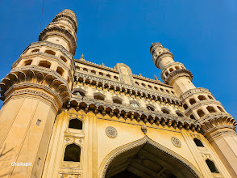
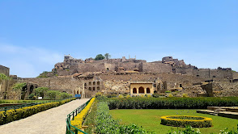
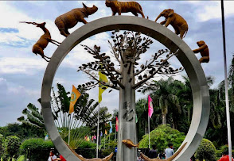
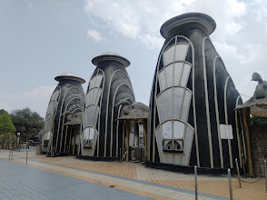
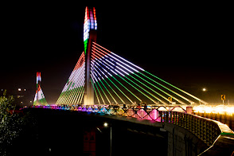

charminar
Hyderabad, Telangana
⭐⭐⭐⭐
The Charminar, located in Hyderabad, India, is a stunning monument built in 1591 by Sultan Muhammad Quli Qutb Shah.
Timings : 9:00AM to 5:00PM

Golkonda Fort
Located in Hyderabad
⭐⭐⭐⭐
Golconda Fort, located near Hyderabad, India, is a majestic medieval fortress known for its intricate architecture and advanced acoustics.
Timings : 9:00AM to 5:00PM

Nehru Zoological Park
Located in Hyderabad
⭐⭐⭐⭐
Nehru Zoological Park, located in Hyderabad, India, is one of the largest and most well-maintained zoos in the country.
Timings :8:00AM to 4:00PM
Ramoji Film City
Located in Hyderabad
⭐⭐⭐⭐
Ramoji Film City, located in Hyderabad, India, is the world’s largest integrated film studio complex, spanning over 2,000 acres.
Timings : 9:00AM to 5:00 PM

NTR Gardents
Located In Hyderad
⭐⭐⭐⭐
NTR Gardens, located in Hyderabad, India, is a beautifully landscaped urban park spread over 36 acres.
Timings :9:00 AM to 9:00PM

CableBridge
Located in Hyderabad
⭐⭐⭐⭐
A cable bridge, or cable-stayed bridge, is a type of bridge where the deck is supported by cables directly connected to towers or pylons.